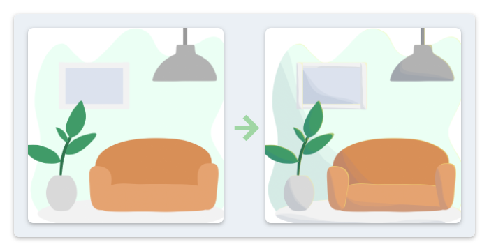
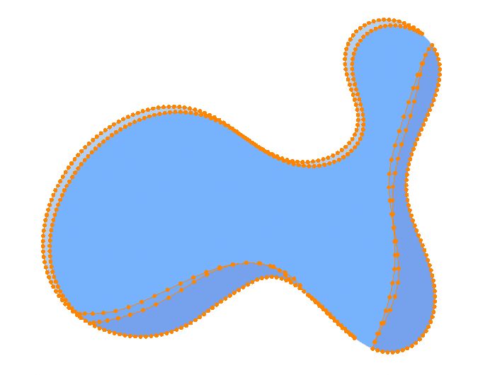
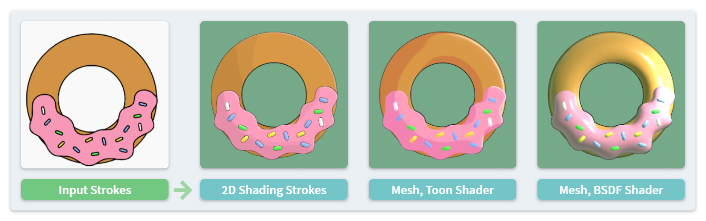

Shading #
This Edit mode operator generates shadow and light areas of selected strokes given a light source in the scene. This function can be used to fit the Grease Pencil art better into the Blender's 3D environment.

There are also some other functions related to 3D lighting and shading which belong to Mesh Generation operators.
Light Source #
There are several options to assign a light source for shading calculation:
- Constant Vector: The user can type the direction (a 3D vector in the global space) and the power of a light source manually.
- Reference Object: By selecting an object in the scene, the location of the object will be regarded as point light source.
- Light Object: By selecting a light object in the scene, the add-on reads all necessary attributes (location, direction, power and type) of it to calculate shading. Please notice that only
PointandSunlights are supported.
The reference object or the light object can have animation data. To generate animated shading, please refer to Multiframe Operations.
Shadow and Lighting Styles #
The outputs of this operator are new strokes that depict the shadow terminator lines of the input shapes. There are several options for the generated shadow and light strokes separately.

Shadow Strokes #
- Threshold: The algorithm checks the amount of light hitting the surface of the input shapes, and uses a threshold value to determine if an area is in the shadow.
- A higher value usually leads to larger shadow areas.
- The operator also allows an additional threshold value to generate 2-level shadows.
- Vertical Scale: This value determines how the algorithm assumes the 3D geometry of the input shapes.
- Taking a circle as an example, a large/medium/small vertical scale makes it shaded like a cone/sphere/disk.
- Negative values are supported for concave surfaces.
- Resolution: Higher resolution adds more details to the shadow but requires more time to calculate.
- The user can also specify a minimum area value to ignore shadows that are too small.
Rim Light Strokes #
The setting of generated rim light strokes is simpler. The user just need to set the Width of such strokes.
Stroke Attributes #
The following attributes determine the look of the generated strokes:
- Material: The user can assign materials for generated light and shadow strokes separately. If not assigned, the output strokes will use the same material as input ones.
- Tint Color: By default, the vertex color of the generated strokes are the same as the input ones. The user can however apply a tint color to emphasize the shadows and lights.
Comparison with Mesh Generation #

The visual effect made by this operator is often similar to the Mesh Generation operator with a toon shader. For pure 2D illustration purpose, this method may be more convenient since:
- The shadows and lights are generated as editable Grease Pencil strokes.
- The terminator lines are usually smoother with less artifacts compared with a 3D mesh.
However, there are also some limitations compared with the 3D method:
- Only limited number of light sources and light types are supported. The lighting is also approximated.
- If changing the position/direction of the light source, the already generated strokes cannot correct themselves automatically. You may need to delete them and use this operator again.
- Only toon shading can be achieved.
- Cast shadows will not be generated.